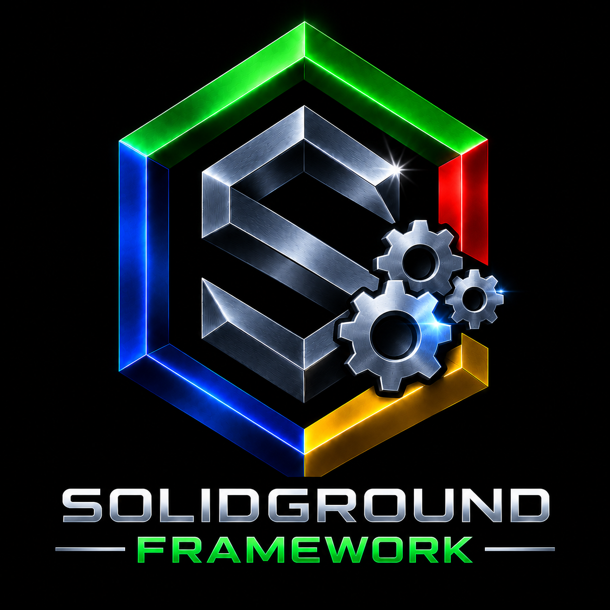

|
 |
SolidGroundUX Version 2.1.2626414 · © 2026 Testadura |
|
Documentation Product reference and guides |
Changelog Releases and development history |
License Terms of use and redistribution |
About SolidGroundUX
The best way to understand SolidGroundUX is not by looking at its features, but by understanding why it came to be.
SolidGroundUX evolved from the observation that many aspects of application development are not unique to a single project. Configuration, logging, user interaction, state management, deployment and documentation are recurring concerns. Once these problems have been solved well, they should become reusable rather than repeatedly reimplemented.
Instead of treating Bash scripts as isolated utilities, SolidGroundUX treats them as software projects. By providing a common runtime, shared services and consistent conventions, applications become easier to understand, maintain and extend, while developers remain free to focus on the problem their application is meant to solve.
The framework does not attempt to hide Bash or prescribe a pattern merely because it is fashionable. It provides practical building blocks where they add value and stays out of the way where they do not.
SolidGroundUX has since grown into a small family of related products. The Framework provides the common runtime and reusable APIs; Management Console Modules provides the modular Linux administration application; the SolidGroundUX SDK owns development, documentation and release tooling. All three follow the same framework conventions without requiring management or development tooling to be part of the Framework itself.
CPRP: the design principles
Every design decision in SolidGroundUX is evaluated against four principles:
- Consistency — Similar problems deserve similar solutions.
- Predictability — Software should behave as developers expect.
- Readability — Code is read far more often than it is written.
- Pragmatism — Abstractions and patterns should earn their place by adding value.
SolidGroundUX is opinionated enough to provide a dependable way of doing things, but pragmatic enough not to insist that every possible factory must become a factory or every list of choices must become an enumeration.
See it in action
A consistent runtime, semantic UI, integrated documentation, deployment tooling, release management and reusable libraries working together as a single framework.
Most shell scripts start small. Over time, they accumulate argument parsing, configuration loading, state management, logging, menus, prompts, validation and deployment logic—often implemented slightly differently in every project.
SolidGroundUX provides a common foundation for those recurring concerns. The result is less repetitive infrastructure code, more predictable behaviour and applications that remain understandable as they grow.

Architecture
SolidGroundUX is organized around a small common runtime rather than a collection of unrelated utilities.
flowchart TB
APP["Applications & Executables"]
CONSOLE["SolidGround Management Console Modules"]
TOOLING["SolidGround SDK / Development & Release Tooling"]
RUNTIME["Bootstrap & Runtime"]
SERVICES["Framework Services<br/>UI & Theming · Logging · Configuration · Persistent State · Dialogs & Input · Menu API"]
LIBS["Shared Libraries<br/>Data Tables · Common Helpers · Console Helpers"]
PAGES["Management Console Pages<br/>Computer Setup · Storage · AD Server · AD Client · AD Management · Samba · Web · SQL Server · Docker · Framework Test · Development"]
APP --> RUNTIME
CONSOLE --> RUNTIME
TOOLING --> RUNTIME
RUNTIME --> SERVICES
RUNTIME --> LIBS
CONSOLE --> PAGES
PAGES --> SERVICES
PAGES --> LIBSThe framework supplies the common execution environment. Applications and tools opt into the services they need, while the Management Console uses the same public framework APIs to assemble a larger interactive application.
Framework Runtime
Bootstrap and execution
Executable scripts explicitly bootstrap into SolidGroundUX. The bootstrap layer provides a predictable runtime environment including:
- Framework-root discovery from the executing component
- Runtime path construction
- Library loading through
SGND_USING - Script metadata
- Argument processing
- Configuration initialization
- Persistent state initialization
- UI and logging initialization
Applications therefore start from a common execution model instead of recreating their own startup infrastructure.
Command-line processing
SolidGroundUX provides declarative argument handling for:
- Long and short options
- Flags
- Value arguments
- Enumerated choices
- Validation
- Generated help
- Usage examples
- Framework-provided built-in arguments
Arguments are described as metadata and processed by the framework rather than manually parsed in each executable.
Configuration
Configuration supports system-wide, user-specific and application-specific values.
The framework resolves the applicable configuration during startup and makes the effective settings available to the application. This allows scripts to use persistent configuration without embedding configuration-file parsing throughout their implementation.
Persistent state
State is intended for values that belong to an execution workflow rather than permanent configuration.
Typical uses include:
- Previous user selections
- Last-used paths
- Console preferences
- Incremental deployment timestamps
- Wizard and workflow values
Scripts declare the state they want to persist; the framework handles loading and saving it.
Logging
SolidGroundUX provides semantic message functions and independently configurable console and file logging.
Applications can emit messages according to meaning—information, warning, failure, success, debug and related states—without deciding presentation at every call site.
Console and file log levels are controlled independently, allowing interactive output to remain quiet while retaining more detailed diagnostic logging when required.
Terminal UI and dialogs
The UI layer provides reusable terminal primitives for:
- Titles and section headers
- Labels and values
- Wrapped and aligned text
- Semantic colours
- Themes
- Glyphs
- Input prompts
- Decisions and selections
- Form-style input
- Date/time input
- Auto-continue dialogs
- Progress indicators
Presentation is separated from application logic wherever doing so adds practical value.

Menu API
sgnd-menu.sh provides the reusable public menu API used by the Management Console and standalone framework tools.
Consumers can create a menu, register groups and items, render the current page, read or dispatch selections, and control optional console chrome without implementing their own menu model.
This is deliberately separate from the SolidGround Management Console itself: the console is a consumer of the menu framework, not the definition of it.
Data tables
The datatable library provides schema-based operations for pipe-separated datasets and is used internally where structured shell data is preferable to parallel ad-hoc arrays.
Shared libraries
Reusable functionality lives in common libraries rather than being copied between applications or console modules.
A useful distinction has evolved within the framework naming convention:
sgnd_*— public framework API intended for consumers._sgnd_*— framework-internal API available to cooperating SolidGroundUX libraries and components._foo— local implementation detail belonging to a particular script or module.
Bash cannot enforce these access levels, but the convention makes intended ownership clear.
SolidGround Management Console
The SolidGround Management Console is a modular administration application built on the SolidGroundUX runtime and public menu API.
It is intended to provide a consistent interface for common Linux system-management tasks while delegating substantial workflows to reusable framework libraries and executables.

Index-based navigation
The console starts with a lightweight main index.
At startup it discovers the available console pages and reads their lightweight metadata, but does not immediately source every implementation module.
When a page is selected:
- Its module is sourced.
- The module registers its detailed groups and actions.
- The selected page is rendered.
- The module remains loaded for the rest of the console process.
Returning to the index does not unload the page.
This keeps initial console startup lightweight while avoiding repeated loading once functionality has been used.
Page visibility
Console pages can be enabled or disabled through persistent visibility state.
When running as root, the index exposes Manage visibility (V). Changes are stored in the existing console-module state and the index is rebuilt immediately.
Visibility is therefore part of the console environment rather than hard-coded into the host.
Direct controls
Frequently used runtime controls are available directly from the console instead of requiring a separate settings page.
These include controls for such things as:
- Dry-run or commit mode
- Access context
- Console logging
- File logging
- Theme
- Lines per page
- Redraw
- Interactive shell access
The exact available controls are shown by the console itself.
Management pages
The current console is organized around functional pages including:
Computer Setup
Base-machine preparation and configuration, including machine identity, networking, SSH, package management and template preparation.
Storage
Local storage provisioning and inspection, including filesystem creation, persistent mounting, expansion, validation, status, ownership and permissions.
Active Directory Server
Samba Active Directory server installation, provisioning, validation, status and directory-management functions.
Active Directory Client
Domain-client installation, join/leave workflows, membership status and related DNS integration.
Samba File Server
Samba file-server installation, validation and managed-share administration.
SolidGroundUX
Framework information and maintenance, including configuration, state, logging, diagnostics and access to the Release Manager.
Development
Workspace, deployment, release preparation, wrapper creation, documentation and other SolidGroundUX development workflows.
The page structure can evolve without requiring the console host itself to become a monolithic administration script.
Development Tooling
SolidGroundUX includes tools for building and maintaining applications that use the framework.
Workspaces
create-workspace creates a repository-shaped development workspace. It discovers installed convenience templates, lets the developer choose which templates to copy into the workspace, can instantiate starter scripts per selected template, and creates basic repository material including README.md, CHANGELOG.md, and project assets.
deploy-workspace deploys complete or filtered workspace content locally or remotely. It supports incremental deployment and can select content by filename or mask and modification time.
Documentation generation
doc-generator extracts structured documentation from source comments, maintains a normalized processor/renderer boundary, and renders a navigable HTML documentation set.
The source dialect supports presentation hints, image groups, semantic tables using . Table / . EndTable with :: cell separators, and <> alignment columns for proportional-font layout without turning aligned text into a table. A literal @ modifier is defined to protect documentation text from structural interpretation.
Generation can build a complete collection, update selected or changed content, or render again from existing normalized data. Per-product .docignore configuration and deterministic multi-product asset handling allow one documentation collection to span multiple products without silently overwriting duplicate assets.
Documentation therefore remains close to the code it describes rather than becoming an unrelated document that must be maintained independently.

Release preparation
prepare-release turns one or more development products into prepared SolidGroundUX release packages.
A release run can select a primary product and companion products. Each product keeps its own product identity and its own version/build update policy. A combined bundle inherits Version and Build from the primary product rather than maintaining separate bundle metadata.
The tool can create individual product releases, a combined bundle, or both. A bundle inherits Version and Build from its primary product. Human-readable product names are retained in package metadata, while generated filenames use filesystem-safe product names.
Its responsibilities include per-product release metadata maintenance, checksums, manifests, removed-file tracking, executable permissions, wrapper verification, product ownership collision detection and creation of the final release artifacts. Removal baselines are selected independently per product (and for the bundle), with manifest choices filtered to the matching product. Conflicting bundle paths are reported rather than silently allowing one product to overwrite another.
Every prepared package carries project/product identity used by release-manager, so Version and Build do not have to be re-entered during installation or update. The resulting release packages are intended to be consumed by release-manager.
Installation and Release Management
SolidGroundUX uses release-manager.sh as the canonical installation and release-lifecycle tool for the framework and separately released SolidGroundUX products.
The Release Manager discovers prepared packages from their package metadata and can switch between bundled and individual products. Each project keeps its own release/archive state and GitHub repository configuration. Version and Build belong to the prepared package and are not operator-entered Release Manager settings.
The previous separate installer, updater and uninstaller architecture has been superseded.
A normal release flow is:
Development workspace
|
v
prepare-release
|
v
Prepared release artifacts
|
v
release-manager
|
+--> install
+--> update
+--> rollback / reinstall
+--> removeFilesystem-based release state
Release state is represented by the release artifacts themselves rather than a separate current-version database.
The release manager uses:
/var/lib/solidgroundux/releases
/var/lib/solidgroundux/archiveAvailable releases are kept beneath releases/. Installed release history is retained beneath archive/, where the highest archived release represents the currently installed release.
This makes the release lifecycle inspectable using ordinary filesystem tools.
Bootstrap installation
A release bundle can include both the prepared release and release-manager.sh.
On a fresh machine, the bundle can be extracted into a temporary location and the bundled release manager executed. It establishes the canonical release-management directories, installs itself into its managed location, validates the accompanying release and proceeds through the normal installation path.
The bootstrap path therefore converges on the same release model used for subsequent updates and rollbacks.
Conventions and Extensibility
SolidGroundUX favors convention over repeated configuration.
Executable scripts, source-only libraries and Management Console modules each follow recognizable structures. Shared behavior is moved into common libraries when multiple independent consumers need it.
In particular, lazy-loaded console modules must not depend on another page having been opened first. Functionality genuinely shared between modules belongs in an appropriately scoped common library. Management-console-specific ownership remains with the Management Console Modules product.
This keeps page modules focused on registration and subject-specific behavior while preserving predictable dependencies.
Included Tools
| Tool | Purpose |
|---|---|
sgnd-smoketest | Validate the framework installation and exercise core framework APIs and runtime behaviour |
tar-it / untar-it | Framework archive helpers used by framework consumers and tooling |
Intended Audience
SolidGroundUX is intended for developers and system administrators who:
- Build more than a handful of shell scripts
- Prefer reusable infrastructure over copy-and-paste development
- Want a consistent application structure
- Value documentation, readability and maintainability
- Prefer software that remains understandable and inspectable rather than hiding behaviour behind unnecessary abstraction
SolidGroundUX does not try to turn Bash into another language.
It tries to provide enough solid ground beneath Bash applications that they can be treated like software.